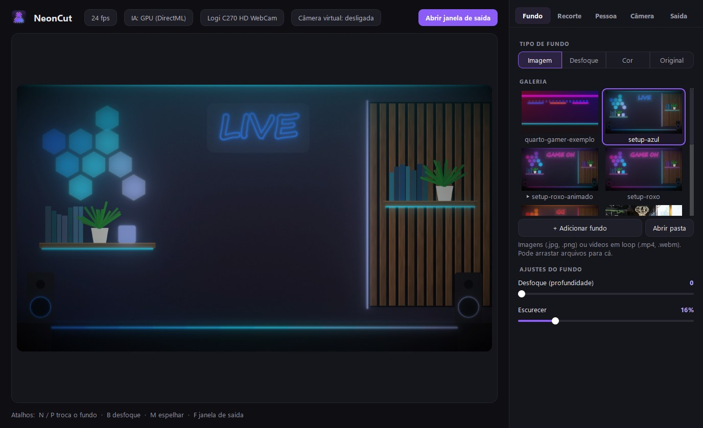
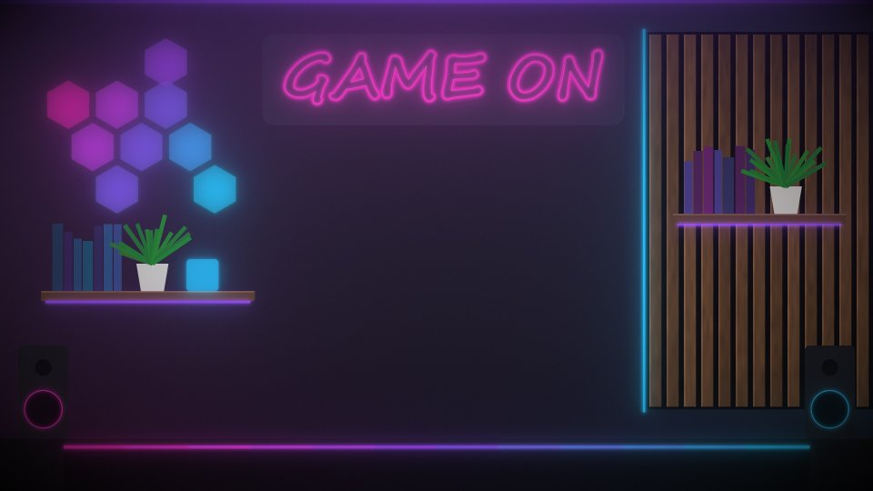
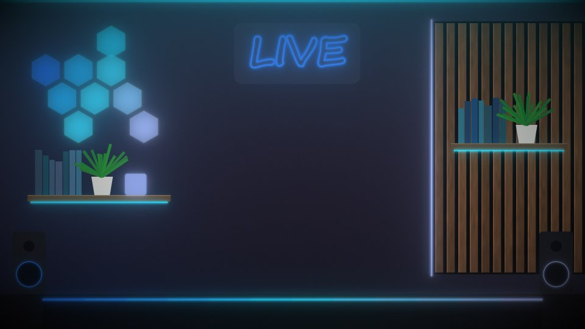
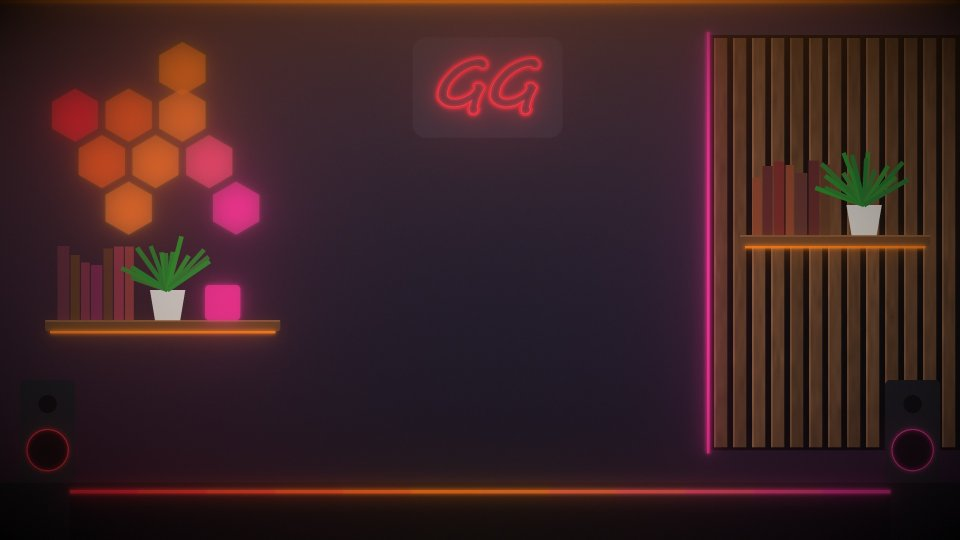
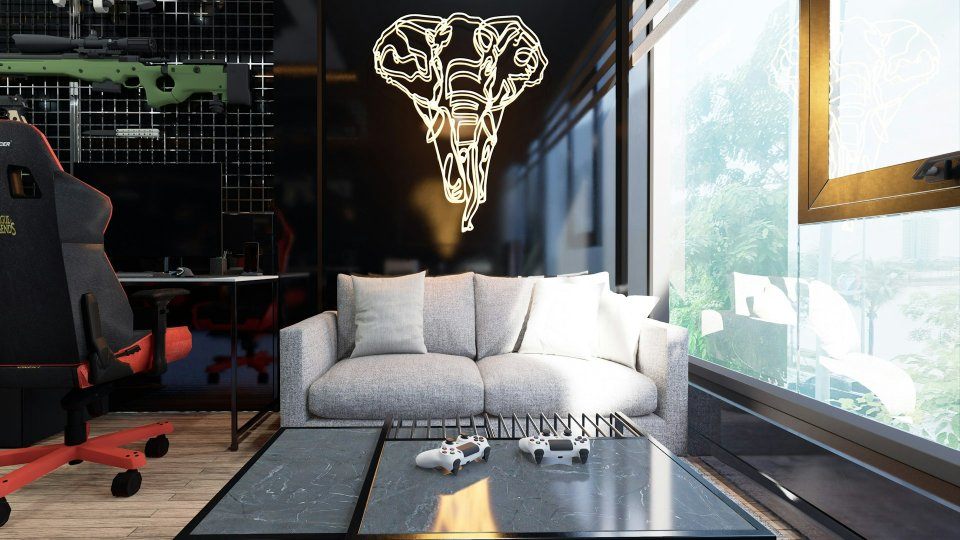
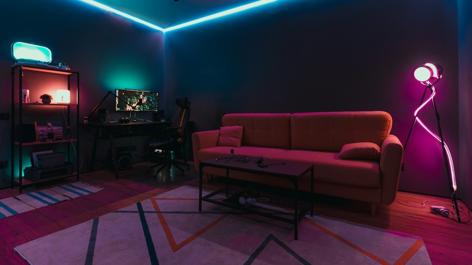
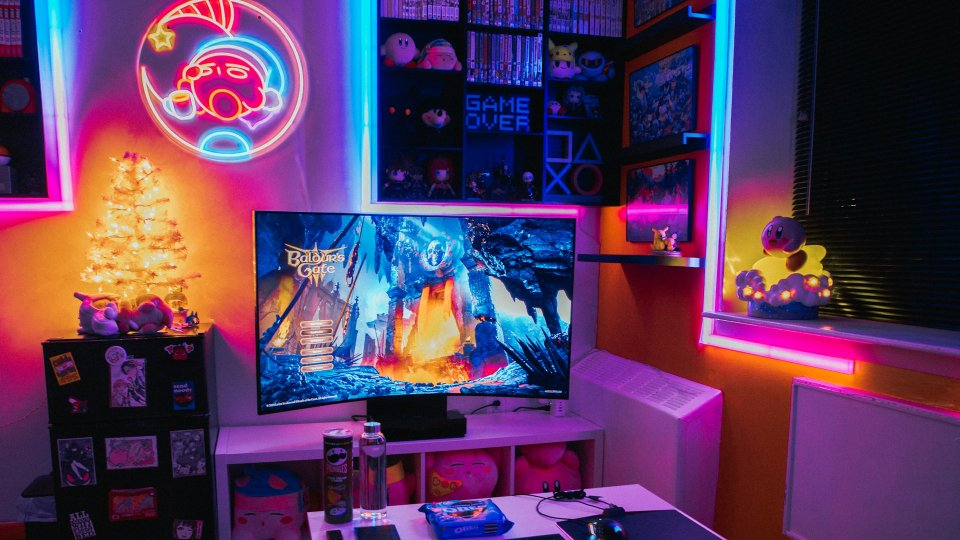

A IA roda na sua placa de vídeo e recorta você fio a fio, com cabelo, fone e boné. Coloque um quarto gamer, um escritório ou qualquer foto e leve direto para o Streamlabs ou OBS.

Fundos neon que vêm com o app, fotos reais de setup ou vídeos em loop. Escolha um e o NeonCut coloca você na frente.






Mesma técnica dos apps pagos de câmera virtual, sem assinatura.
Robust Video Matting via DirectML: roda em NVIDIA, AMD ou Intel a ~30 fps e deixa o processador livre para o jogo.
Matting de verdade, não só “pessoa ou fundo”: bordas suaves no cabelo e sem o reflexo colorido da parede atrás de você.
Uma janela de saída limpa, só com o vídeo: é só adicionar como Captura de janela. Também envia para câmera virtual se você tiver o driver.
Use vídeos em loop como fundo. O app já vem com um quarto neon com os LEDs “respirando”.
Cadeira, pôster ou roupa atrás de você aparecendo? Um ajuste mantém só você e apaga os objetos soltos.
Brilho, contraste, saturação, tamanho e posição sobre o fundo, desfoque de profundidade e exposição fluida a 30 fps.
Baixe o NeonCut-Setup.exe e instale. Não pede senha de administrador.
Escolha um fundo da galeria ou arraste a sua própria foto ou vídeo. Na live, troque com N / P.
Clique em Abrir janela de saída e, no Streamlabs/OBS, adicione Captura de janela → NeonCut - Saída.